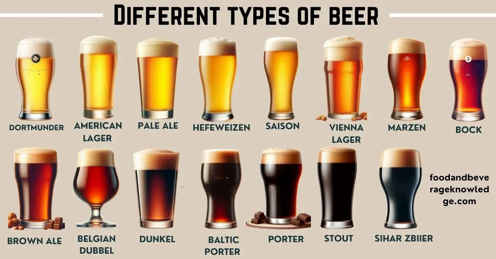

sör
 Sörfajták
sör
Sörfajták
sör
Fedezd fel a sörök sokszínű világát!
Sörfajták
sör
Fedezd fel a sörök sokszínű világát!
A sörök világa rendkívül gazdag és változatos. Az alábbiakban részletesen bemutatjuk a legismertebb sörtípusokat, azok jellemzőit, eredetét és különlegességeit. Minden típusnál egy-egy kép is segít elképzelni, milyen is lehet az adott sör – a képek csak illusztrációk.

A világos sörök, vagy lager típusok, aranysárga színűek, tiszta, frissítő ízvilággal. Általában alacsonyabb alkoholtartalmúak, habjuk fehér és tartós. Népszerűek a nyári hónapokban, és kiválóan illenek könnyű ételekhez.
A lager sörök története a 19. századig nyúlik vissza, amikor a hűtött erjesztés technológiája elterjedt Európában. Ezek a sörök hosszabb ideig, alacsonyabb hőmérsékleten érlelődnek, így lesznek különösen tiszták és üdítőek. A legismertebb lager típusok közé tartozik a pilsner, a helles és a bock. A világos sörök a társasági események, fesztiválok és baráti összejövetelek elengedhetetlen kellékei.
A barna sörök telt, karamelles, pörkölt malátás ízvilágot kínálnak. Színük a borostyántól a sötétbarnáig terjed, habjuk krémes. Gyakran fogyasztják őszi-téli időszakban, jól illik sült húsokhoz, sajtokhoz.
A brown ale Angliából származik, ahol már a középkorban is főztek hasonló söröket. Ezek a sörök gazdag aromájuknak és enyhén édeskés utóízüknek köszönhetően kiválóan párosíthatók nehezebb ételekkel. A barna sörök között találunk könnyedebb, ivósabb változatokat és erősebb, testesebb típusokat is, mint például a nut brown ale vagy a dark mild.
Az IPA-k erősen komlózott, gyümölcsös, citrusos, néha fenyős aromájú sörök. Az angol gyarmati időkben fejlesztették ki, hogy a hosszú tengeri úton is eltartható legyen. Ma a kézműves sörfőzdék egyik legnépszerűbb típusa.
Az India Pale Ale eredetileg Angliából származik, és a brit katonák számára főzték, akik Indiában szolgáltak. A magasabb komlótartalom tartósította a sört a hosszú hajóutak során. Napjainkban az IPA-k reneszánszukat élik, különféle változataik léteznek: session, double, New England, west coast IPA. Ezek a sörök intenzív illatukkal és keserűségükkel hódítanak.
A stout sörök sötétek, szinte feketék, erősen pörkölt malátás, kávés, csokoládés jegyekkel. Habjuk sűrű, krémes. Legismertebb képviselőjük a Guinness. Kiváló desszertekhez, csokoládés süteményekhez.
A stout eredetileg a porter sörök erősebb változata volt, de mára önálló kategóriává nőtte ki magát. Léteznek száraz, édes, zabos, csokoládés és imperial stoutok is. Ezek a sörök különösen népszerűek az Egyesült Királyságban és Írországban, de világszerte sok sörfőzde készít saját változatot.
A búzasörök világosak, enyhén opálosak, frissítő, gyümölcsös, banános, szegfűszeges aromával. Németországban és Belgiumban különösen népszerűek. Jól illenek salátákhoz, halakhoz, könnyű ételekhez.
A búzasörök legalább 50% búzamalátát tartalmaznak, ami különleges, lágy textúrát és egyedi ízvilágot kölcsönöz nekik. A német hefeweizen és a belga witbier a legismertebb változatok. Ezek a sörök gyakran enyhén élesztős, citrusos, fűszeres jegyekkel rendelkeznek, és kiválóan oltják a szomjat meleg napokon.
A kézműves sörök kis főzdékben, kreatív receptekkel készülnek. Lehetnek IPA-k, stoutok, savanyú sörök vagy akár gyümölcsös különlegességek is. A hangsúly az egyediségen, minőségen és a sörfőző szenvedélyén van.
A craft beer mozgalom az Egyesült Államokból indult, de mára világszerte elterjedt. A kézműves sörfőzők gyakran kísérleteznek új alapanyagokkal, komlófajtákkal, érlelési eljárásokkal. A kézműves sörök között találunk extrém keserű, savanyú, fűszeres vagy akár hordóban érlelt változatokat is, amelyek minden sörkedvelő számára tartogatnak meglepetéseket.
Ezek a sörök valódi gyümölcsökkel vagy természetes aromákkal készülnek. Ízük lehet édes, savanykás vagy frissítő, színük a felhasznált gyümölcstől függően változik. Különösen népszerűek a nyári hónapokban.
A gyümölcsös sörök hagyománya főleg Belgiumban és Németországban alakult ki, ahol a lambic és kriek típusok cseresznye, málna vagy más gyümölcs hozzáadásával készülnek. Ezek a sörök kiválóan illenek desszertekhez, gyümölcssalátákhoz, de önmagukban is különleges élményt nyújtanak.